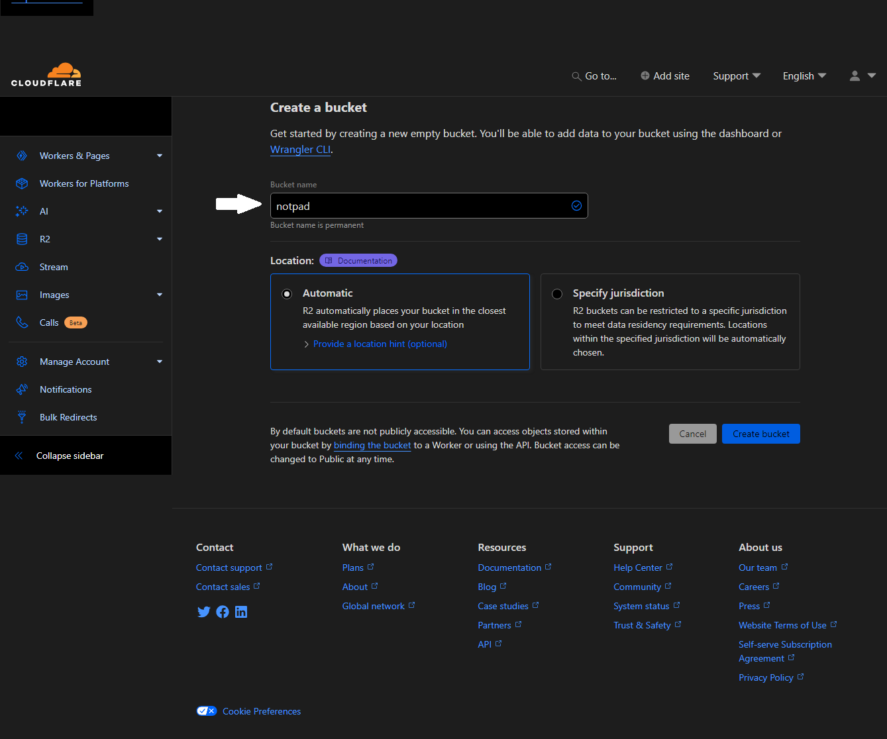
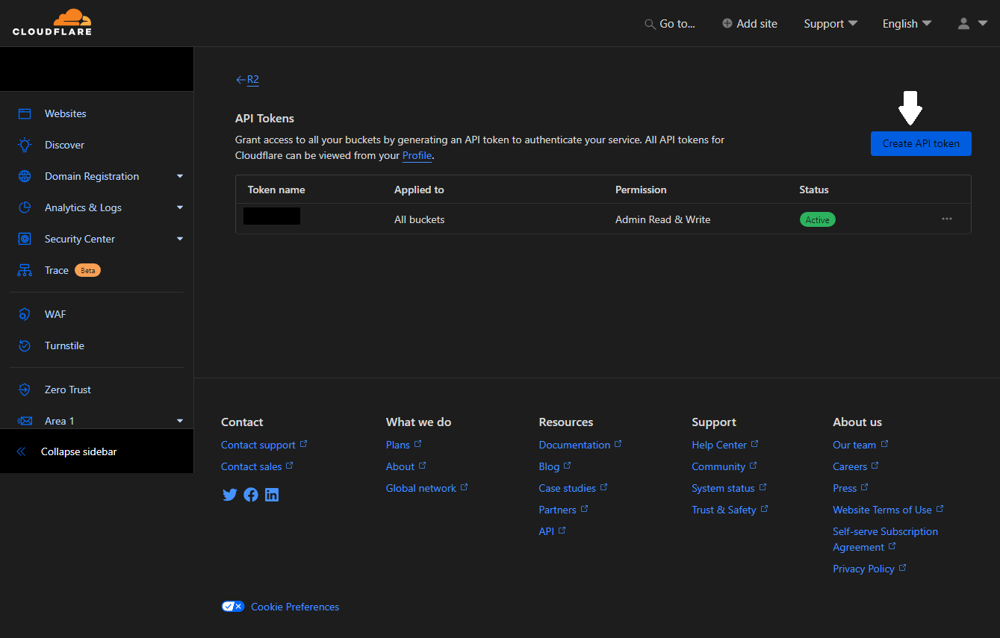
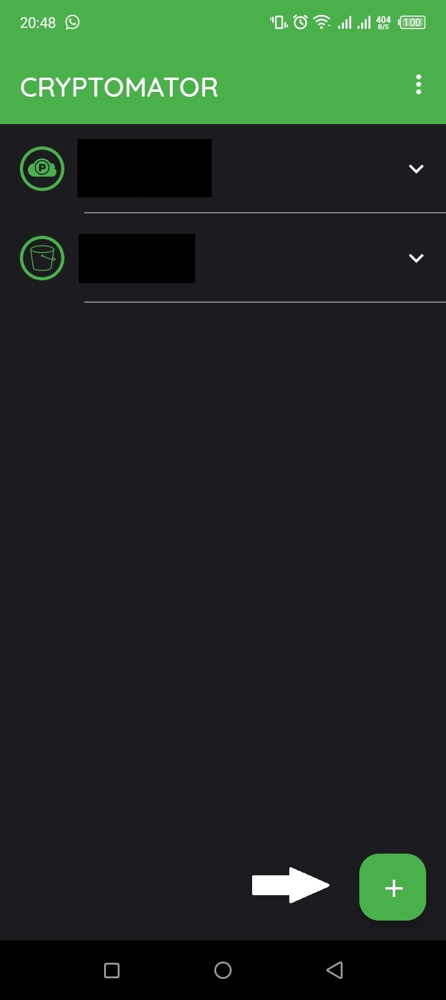
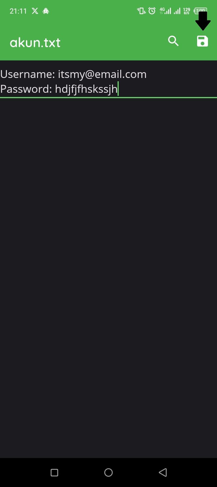

Membuat Notes & Password Manager Sendiri dengan Cryptomator & Cloudflare R2
Kali ini saya akan menuliskan hasil coba-coba saya membuat notes & password manager buatan sendiri dengan menggunakan Cryptomator dan Cloudflare R2. Cryptomator berfungsi sebagai encryptor dan Cloudflare R2 berfungsi sebagai cloud storage untuk menyimpan notes & password.
Untuk penyimpanan data, saya memilih menggunakan Cloudflare R2. Cloudflare R2 memiliki banyak keunggulan, seperti penyimpanan obyek yang kompatibel dengan S3, tanpa biaya keluar, dan migrasi yang mudah. Berikut ini detail biaya di Cloudflare R2.

Langsung saja kita mulai. Langkah pertama silahkan buat akun di Cloudflare. Saya asumsikan Anda sudah paham caranya. Setelah selesai membuat akun, Anda akan diarahkan ke halaman dashboard Cloudflare seperti gambar dibawah ini.
Klik R2 di sebelah kiri dan Anda akan diarahkan ke halaman seperti gambar dibawah ini.

Lalu klik tombol Create bucket untuk membuat bucket tempat penyimpanan notes & password kita nanti. Setelah tombol diklik, Anda akan diarahkan ke halaman seperti gambar dibawah ini.
Silahkan beri nama bucket Anda. Disini saya akan memberi nama bucket saya notpad. Untuk lokasi penyimpanan biarkan Automatic kemudian klik tombol Create bucket dan Anda akan diarahkan ke halaman seperti gambar dibawah ini.

Bucket berhasil dibuat. Kemudian klik Settings dan Anda akan melihat tampilan seperti gambar dibawah ini.

Saat proses membuat bucket sebelumnya, kita memilih lokasi Automatic sehingga data kita akan ditaruh di region terdekat dari lokasi kita. Disini data kita akan diletakkan di pusat data Asia-Pacific (APAC). Kode APAC ini akan kita gunakan untuk mengakses data kita melalui Cryptomator nanti.
Lanjut, klik Objects dan Anda akan melihat tampilan seperti gambar dibawah ini.
Kemudian klik S3 Compability API dan Anda akan diarahkan ke halaman seperti gambar dibawah ini.

Kemudian klik Authentication dan Anda akan melihat tampilan seperti gambar dibawah ini.

Kemudian klik Create API Token dan Anda akan diarahkan ke halaman seperti gambar dibawah ini.
Kemudian klik tombol Create API token dan Anda akan melihat tampilan seperti gambar dibawah ini.

Silahkan beri nama token yang akan Anda buat. Disini saya memberi nama token saya notpad. Kemudian untuk Permissions pilih Admin Read & Write lalu klik tombol Create API Token. Setelah itu Anda akan melihat tampilan seperti gambar dibawah ini.
Token berhasil dibuat dan Anda akan melihat informasi terkait token Anda untuk mengakses bucket Anda nantinya. Salin data-data tersebut dan simpan ditempat yang aman. Jangan sampai hilang ataupun diketahui oleh orang lain.
Data ini hanya bisa dilihat satu kali, setelah Anda klik Finish, maka Anda tidak bisa melihat informasi ini lagi. Jika sudah menyimpan informasi tersebut, klik Finish dan proses pembuatan bucket sudah selesai.
Sebelum memulai langkah kedua, kita bahas tentang Cryptomator terlebih dahulu. Cryptomator adalah perangkat lunak sumber terbuka untuk mengenkripsi data kita di cloud, sehingga penyedia layanan cloud storage tersebut tidak bisa "mengintip" data kita.
Cryptomator tersedia untuk Windows, macOS, Linux, Android, dan iOS. Cryptomator gratis untuk Windows, macOS, dan Linux namun berbayar (one-time payment) untuk Android dan iOS.
Sekarang kita mulai langkah kedua, yaitu mengakses data kita melalui Cryptomator. Karena saya pengguna ponsel Android, maka saya akan memberikan langkah penggunaan Cryptomator versi Android.
Pertama-tama silahkan beli terlebih dahulu aplikasi Cryptomator di Play Store kemudian install. Setelah proses install selesai, buka aplikasi Cryptomator dan Anda akan melihat tampilan seperti gambar dibawah ini.
Klik tombol + di pojok kanan bawah dan Anda akan melihat tampilan seperti gambar dibawah ini.

Klik Add existing vault dan Anda akan melihat tampilan seperti gambar dibawah ini.

Klik S3 dan Anda akan melihat tampilan seperti gambar dibawah ini.
Klik tombol + di pojok kanan bawah dan Anda akan melihat tampilan seperti gambar dibawah ini.

Silahkan isi sesuai dengan informasi dari token yang kita buat tadi. Setelah selesai kemudian klik tombol Connect dan Anda akan melihat tampilan seperti gambar dibawah ini.

Kemudian klik bucket yang berhasil dibuat dan Anda akan melihat tampilan seperti gambar dibawah ini.

Klik tombol Place here di pojok kanan bawah dan Anda akan melihat tampilan seperti gambar dibawah ini.

Anda diminta untuk membuat kata sandi. Silahkan buat kata sandi yang mudah Anda ingat namun sulit ditebak orang lain karena tidak ada opsi lupa kata sandi. Setelah itu klik tombol Done dan Anda akan melihat tampilan seperti gambar dibawah ini.

Klik bucket yang Anda buat dan Anda akan melihat tampilan seperti gambar dibawah ini.

Masukkan kata sandi yang Anda buat tadi kemudian klik Unlock. Anda akan melihat tampilan seperti gambar dibawah ini.
Bucket Anda berhasil diakses melalui Cryptomator. Sekarang mari kita coba buat sebuah file. Klik tombol + di pojok kanan bawah dan Anda akan melihat tampilan seperti gambar dibawah ini.

Ada 3 opsi yang bisa dilakukan, yaitu mengunggah file, membuat folder, dan membuat file teks. Pertama kita coba untuk membuat sebuah file teks. Klik Create text file dan Anda akan melihat tampilan seperti gambar dibawah ini.

Saya akan membuat sebuah file bernama Akun.txt. Klik Create dan Anda akan melihat tampilan seperti gambar dibawah ini.
Silahkan ketik apapun disitu kemudian klik ikon save di pojok kanan atas dan Anda akan melihat tampilan seperti gambar dibawah ini.
Terlihat file berhasil dibuat. Silahkan anda mengunggah file, menulis note, atau membuat folder melalui Cryptomator dan secara otomatis akan dienkripsi dan diunggah ke Cloudflare R2 oleh Cryptomator. Tentunya dibutuhkan koneksi internet untuk mengakses file Anda.
Sekarang mari kita lihat bagaimana struktur file Anda di Cloudflare R2. Buka dashboard Cloudflare R2 Anda di web browser dan Anda akan melihat tampilan seperti gambar dibawah ini.

Anda akan melihat struktur file yang unik dan sulit karena itu merupakan enkripsi yang dilakukan Cryptomator dan file bernama vault.cryptomator adalah kunci untuk mengakses atau mendekripsi file Anda.
Tutorial membuat notes & password manager sendiri dengan Cryptomator dan Cloudflare R2 sudah selesai. Namun ada sebuah kekurangan, yaitu untuk mengakses file Anda di cloud melalui Cryptomator dibutuhkan koneksi internet. Saya akan menulis tutorial bagaimana mengakses file Anda tanpa membutuhkan koneksi internet.
Terima kasih dan sampai jumpa kembali.